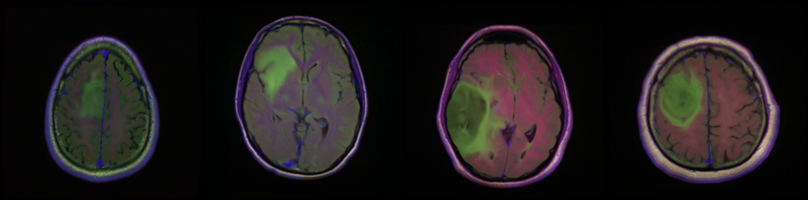
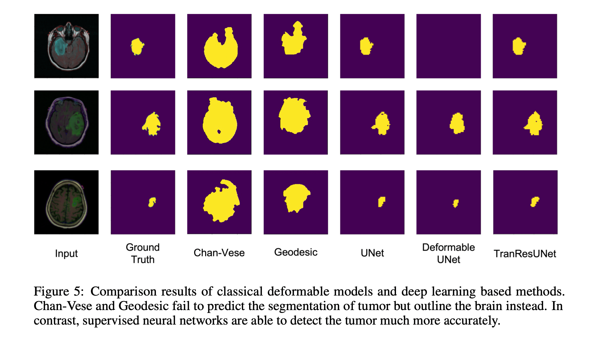
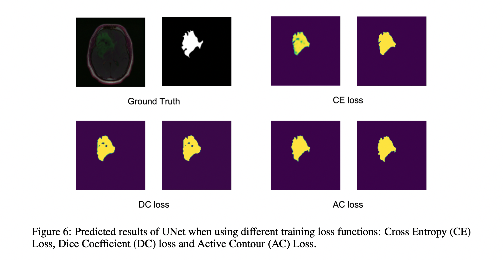

DDL: Deep Deformable Learning for Image Segmentation
Arjun Kallapur, Feiyang Chen, Nischal Chandra, Sanjeev Venkatesan, Tianyi Xie, Vaibhav Kumar
Group 9
What is DDL?
Deadline?
Deep Deformable Learning!
Overview
Image segmentation is a computer vision task of extracting pixel-wise mask segments of objects for an image. While modern Deep Learning-based models have achieved great success in various image segmentation tasks such as scene understanding, medical image analysis, applications for driver-less cars and more, they can still be improved in terms of sheer performance, model explainibility and computational complexity. In this work we will explore the effectiveness of deep learning based models, deformable models and finally the combination of the two over various Image Segmentation datasets. We aim to combine the classical geometry and physics based approach of deformable models with modern large-scale advances in deep learning in order to propose a novel model architecture. We will finally perform an empirical analysis of various models on a suite of datasets and metrics to do a comparative case study.
Methods
Classical Deformable Models
- Chan-Vese Level Sets
- Can handle noisy images
- Useful when boundaries are not defined by gradients
- Level sets evolve iteratively to minimize an energy
- Morphological Snakes
- Family of snakes used in image segmentation
- Use morphological operators (dilation, erosion) instead of PDE models
- Numerical methods help with computational speed and stability
Deep Learning Models
- CNNs
- U-Net
- Encoder: reduce spatial information + increase feature information
- Decoder: increase spatial information + decrease feature map
- Skip connections between layers
- R-CNN + variants
- Fast R-CNN
- Faster R-CNN
- YOLO
- SSD
Deep Deformable Models
- Deformable Convolution v1
- Deformable Convolution: Adding offsets to the regular grid sampling locations in the standard convolution
- Deformable RoI Pooling: Adding offsets to each bin position in the regular bin partition of the previous RoI pooling
- Both modules are lightweight, they can easily be embedded in the existing models (such as CNNs) without additional supervision signals and are suitable for end-to-end learning
- Deformable Convolution v2
- Stacking More Deformable Conv Layers
- Modulated Deformable Modules
- R-CNN Feature Mimicking
- Deformable U-Net
- Encoder: Encode feature information using deformable convolutions
- Decoder: Decode feature information using transposed deformable convolutions
- Pooling: Replace fixed kernel average/max pooling with learned deformable kernels with offsets
Dataset
Our dataset is from kaggle: Brain MRI segmentation.
This dataset contains brain MR images together with manual FLAIR abnormality segmentation masks.
The images were obtained from The Cancer Imaging Archive (TCIA).
They correspond to 110 patients included in The Cancer Genome Atlas (TCGA) lower-grade glioma collection with at least fluid-attenuated inversion recovery (FLAIR) sequence and genomic cluster data available.
Tumor genomic clusters and patient data is provided in data.csv file.

Experiments
As a part of our experiments we implemented three different models and
evaluate the metrics based on these. The models implemented were
- U-Net
- Deformable U-Net
- TranResUNet
While U-Net served as our baseline model for project purposes, we implemented a transformer
based U-Net model named TransResUNet to better utlize the power of transformers. Finally we implemented
a third model,Deformable U-Net. These models were evaluated based on three different losses namely
- Cross Entropy Loss
- Dice Loss
- Active Contour Loss
Furthermore the metrics used for evaluation were

